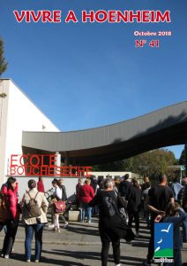

Le mag
Vivre à Hoenheim N°44

Au programme : l’inauguration du club-house et des vestiaires du football, retour sur les dernières réunions de quartier, zoom sur la visite du ban communal, le forum des seniors, l’histoire du quartier du Ried, l’annonce de l’exposition du mois de septembre « Du livre au papier »…
Vivre à Hoenheim N°43

Au programme : l’inauguration de l’école maternelle du Centre, le chantier de la Maison de la Musique, trois réunions de quartier, les prix du concours du fleurissement, les ateliers de théâtre dans les écoles, le prochain Forum des Seniors…
Vivre à Hoenheim N°42

Au programme : trois rendez-vous pour les écoliers, les assistantes maternelles, le nouvel espace « Snoezelen » au multi-accueil, le Noël des seniors, Martine et ses roses, Josiane Arnold à l’honneur…
Vivre à Hoenheim N°41

Au programme : la réunion publique au Champfleury, les gros chantiers de l’été, la rentrée scolaire, le nouveau programme culturel, le concours du fleurissement, des rénovations énergétiques …
Vivre à Hoenheim N°40

Au sommaire : cinq réunions de quartier, l’inauguration du Centre d’incendie et de secours, le 1er prix de l’école élémentaire Bouchesèche, la restructuration des transports publics au nord, le salon Art et Artisanat de septembre …